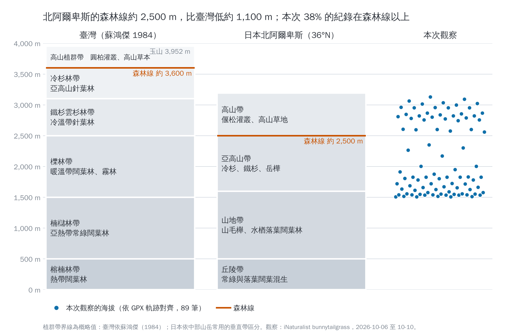

兩地植群帶畫在同一個海拔尺度上；藍點是本次每筆觀察的海拔（依 GPX 軌跡對齊）。帶界為概略值：臺灣依蘇鴻傑（1984），日本依中部山岳常用的垂直帶區分。由 vegzones.py 產生。
與臺灣的差異
- 森林線低了約 1,100 m。北阿爾卑斯約 2,500 m，臺灣約 3,600 m。這裡的緯度（36°N）比臺灣（23.5°N）高約 12 度，同海拔氣溫更低，冬季季風帶來的大雪與強風也把森林壓得更低。
- 同樣的海拔，看到的是不同的植被。本次 1,500–1,700 m 的上高地是落葉闊葉河畔林（連香樹、日本七葉樹）；臺灣同高度是櫟林帶的常綠闊葉林。2,500–3,100 m 在這裡已是偃松灌叢與高山草地，在臺灣仍是鐵杉、雲杉針葉林。
- 森林線以上的主角不同。日本是匍匐的偃松，臺灣是玉山圓柏、玉山杜鵑灌叢與箭竹草原。
- 秋色來自落葉樹。亞高山帶有岳樺、七灶花楸、槭類等落葉樹，10 月形成整片紅黃葉；臺灣同一帶以常綠針葉樹為主，秋色只零星出現在巒大花楸等少數落葉樹。